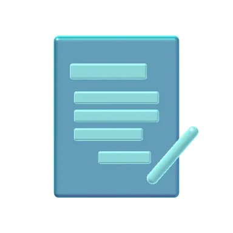
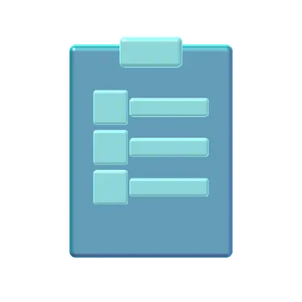
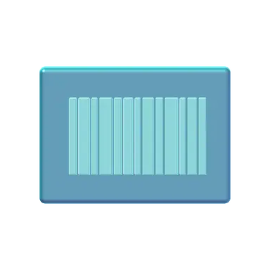

Each service is designed to remove a specific source of administrative burden, delivered by trained professionals and supported by secure technology.
- Before Pre-charting
- During Scribing
- After Coding
- Beyond Chronic care, assistants, DataScribing
What changes around the visit.
From pre-charting before the visit to coding after it, each service removes a specific source of administrative burden.
Virtual Medical Scribing
Real-time documentation during the visit

Pre-Charting Services
Records organized and updated before the appointment

Virtual Medical Assistant
Handled by a human-assisted, AI-supported assistant
Chronic Care Management
Proactive plans, remote monitoring, coordinated care
Expert Medical Coding Services
Accurate CPT, ICD-10-CM, E/M & modifier coding

Offline & DataScribing Solutions
Clean, structured digital records
From first call to full coverage in three steps.
After an initial consultation, we match and train a scribe or care team on your workflow, then begin a guided trial.
- 01
Consult & scope
Tell us what's slowing you down and we match the right specialists to the way you already work.
- 02
Guided start
Start with a free week of live scribing. Every deliverable is human-reviewed before it reaches you, with no long-term commitment required.
- 03
Scale with confidence
Keep what works. Move from part-time support to full clinical coverage as your practice grows.
The same standard on every engagement.
How we work, whatever service you choose.
- Every note is reviewed by a person
- Every note we produce is reviewed by a trained professional and delivered straight into your EHR.
- Documented where your team already works
- In most cases our scribes document directly within your existing EHR and templates, so there’s no disruptive software change for your staff.
- Coverage that scales with you
- Support is customizable, from part-time to full-time, and you can increase or reduce it as your patient volume and workflow shift.
Before you get started.
In most cases, yes. Our scribes are trained to document directly within your existing EHR and templates, so there’s no disruptive software change for your staff.
You get one week free to experience the service, followed by 50% off your next two weeks. There’s no long-term commitment, so you can decide based on real results.
Absolutely. Our support is customizable and scales from part-time to full-time. You can increase or reduce coverage as your patient volume and workflow shift.
After an initial consultation, we match and train a scribe or care team on your workflow, then begin a guided trial — typically within a couple of weeks.